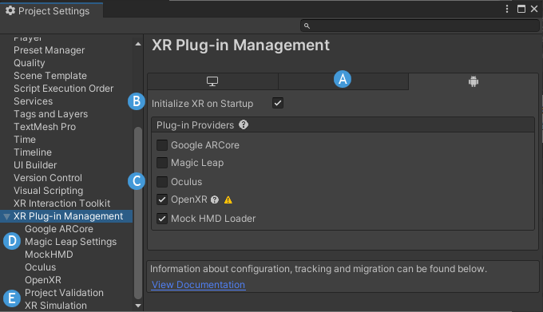

XR Plug-in Management settings
Use the XRAn umbrella term encompassing Virtual Reality (VR), Augmented Reality (AR) and Mixed Reality (MR) applications. Devices supporting these forms of interactive applications can be referred to as XR devices. More info
See in Glossary Plug-inA set of code created outside of Unity that creates functionality in Unity. There are two kinds of plug-ins you can use in Unity: Managed plug-ins (managed .NET assemblies created with tools like Visual Studio) and Native plug-ins (platform-specific native code libraries). More info
See in Glossary Management settings to configure XR support in a Unity project.
These settings let you choose which platforms and devices the project can target. After you have enabled an XR plug-in, you can find settings for that plug-in in its own section underneath XR Plug-in Management.

The XR Plug-in Management section of the Project Settings
The XR Plug-in Management settings:
| Label | Setting | Purpose |
|---|---|---|
| A | Build target tabs | A tab is shown for each platform build target installed for the current Unity Editor. You can add additional platform support modules with the Unity Hub. |
| B | Initialize XR on Startup | Whether the game or application should start in XR mode immediately. If disabled, then your application logic is responsible for initializing XR at the appropriate time. For example, your app could start with a normal desktop display and then switch to XR on demand. Refer to Load XR plug-ins for more information. |
| C | Plug-in Providers | The list of known XR provider plug-ins. This list contains the plug-ins officially supported by Unity or its strategic partners as well as any third-party provider plug-ins you have installed with the Package Manager. When you enable a provider plug-in, Unity adds the associated package to the project if it is not already installed. Disabling a plug-in does not remove the package. (You can remove packages with the Package Manager.) |
| D | Provider plug-in settings | The settings for each installed XR provider plug-in appear in their own pages within the XR Plug-in Management section. For information about the available settings for a specific plug-in refer to that plug-in’s documentation. You can find a list of plug-ins and links to their documentation in Provider plug-ins. |
| E | Project Validation | Displays the results of project validation checks for the plug-ins you have enabled. To view the checks, select the Project Validation page inside the XR Plug-in Management section of your Project SettingsA broad collection of settings which allow you to configure how Physics, Audio, Networking, Graphics, Input and many other areas of your project behave. More info See in Glossary. |
| E | XR Simulation settings | The ARAugmented Reality More info See in Glossary Foundation package provides an XR Simulation feature, which lets you test AR ScenesA Scene contains the environments and menus of your game. Think of each unique Scene file as a unique level. In each Scene, you place your environments, obstacles, and decorations, essentially designing and building your game in pieces. More info See in Glossary in the Unity Editor. See XR Simulation project settings for a description of these settings and options. |
Project Validation
The project validation system helps you avoid common scene and project configuration issues for the XR packages you have installed. The XR packages you have installed can include rules for the validation system. The system evaluates these rules when you make a build and whenever you have the Project Validation window open. To open the window, go to your project settings (menu: Edit > Project Settings) and then select Project Validation in the XR Plug-in Management section. The rules are checked per platform build target. Some rules may examine the current scene to verify that the project settings support features used in that scene.

The Project Validation section of the XR Plug-in Management settings
| Property | Description |
|---|---|
| Platform tabs | The validation checks for each platform are grouped by platform. You can select a platform tab to view the validation checks for that platform. |
| Issue list | The list of issues found in the project when evaluating the rules. Each issue has a severity level, description, and action button. |
| Show all | Select to show all issues, regardless of severity. Issues marked with a green check indicate validation checks that passed and do not require any action. Successful checks are only displayed when you enable Show all. |
| Ignore build errors | Select to ignore build errors. This option can sometimes be useful when debugging build problems. |
| Fix all | Click to correct all issues that have a fix available. |
Tip: If the issue has scene objects associated with it, you can click on the message to select or highlight these objects in the Unity Editor.
Severity level
The status icons to the left of an individual validation issue indicate the status and severity of the issue.
| Status | info |
|---|---|
| Validation passed because the project and scene are either set up correctly, or the rule is not applicable. Successful checks are hidden in the project validation issue list unless you enable the Show all option. | |
 |
Validation failed, but does not block building the project. You can safely ignore these if you have set up your project differently than recommended. |
 |
Validation failed and will block building the project. These issues cannot be ignored. You must fix them in order to build the project. |
Fix and Edit buttons
The Fix button automatically fixes the issue in your project or Scene. The Edit button takes you to the appropriate place in the Unity Editor where you can correct the issue in your project. Both the Fix and Edit buttons provide a tooltip explaining the steps to manually correct the issue.